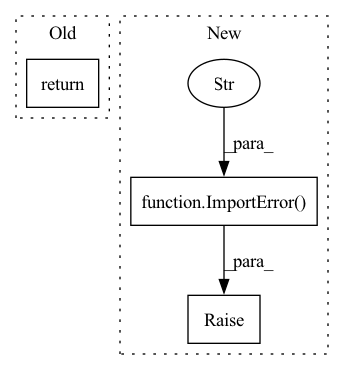

Pattern ID :1048

Before Change
torch.tensor
//
return torch.from_numpy(img.transpose(2, 0, 1)).float()
After Change
return img
else:
raise ImportError("You need to install PyTorch to use this method.")
def torch_to_numpy(img):
if is_torch_available():
In pattern: SUPERPATTERN
Frequency: 4
Non-data size: 3
Instances
Fragment ID: 5264005
Project Name: obss/sahi
Commit Name: 1666b4b318ac7bf2ce857a98e4528705ba1e802f
Time: 2022-05-28
Author: 34196005+fcakyon@users.noreply.github.com
File Name: sahi/utils/torch.py
M Class Name: AnonimousClass
N Class Name: AnonimousClass
M Method Name: to_float_tensor(1)
N Method Name: to_float_tensor(1)
M Parent Class:
N Parent Class:
M File Name: sahi/utils/torch.py
N File Name: sahi/utils/torch.py
M Start Line: 21
M End Line: 21
N Start Line: 44
N End Line: 57
'>
Before Change
return SentenceTransformer(modules=[model, pooling])
// Download model directly from sentence transformers if model hub disabled
return SentenceTransformer(path)
def index(self, documents):
ids, dimensions, stream = [], None, None
After Change
return (model, tokenizer, Models.device(deviceid))
if not SENTENCE_TRANSFORMERS:
raise ImportError("sentence-transformers is not available - install "similarity" extra to enable")
// Download model directly from sentence transformers if model hub disabled
return SentenceTransformer(path, device=Models.reference(deviceid))
'>
Fragment ID: 5264006
Project Name: neuml/txtai
Commit Name: 1f82d54009bc268d22b0b481a14860c35aae4dc4
Time: 2021-08-13
Author: 561939+davidmezzetti@users.noreply.github.com
File Name: src/python/txtai/vectors/transformers.py
M Class Name: TransformersVectors
N Class Name: TransformersVectors
M Method Name: load(2)
N Method Name: load(2)
M Parent Class: Vectors
N Parent Class: Vectors
M File Name: src/python/txtai/vectors/transformers.py
N File Name: src/python/txtai/vectors/transformers.py
M Start Line: 27
M End Line: 36
N Start Line: 36
N End Line: 52
'>
Before Change
kwargs["config"] = kwargs.get("config", default_config)
wandb.init(**kwargs)
wandb.run._label(repo="Deepchecks") // pylint: disable=protected-access
return dedicated_run
After Change
try:
import wandb
except ImportError as error:
raise ImportError(
""set_wandb_run_state" requires the wandb python package. "
"To get it, run "pip install wandb"."
) from error
else:
if dedicated_run is None:
dedicated_run = wandb.run is None
'>
Fragment ID: 5264007
Project Name: deepchecks/deepchecks
Commit Name: a5fcf3ee4a3a25908e587fc7d0458efd4eb7a30b
Time: 2022-05-04
Author: 71635444+yromanyshyn@users.noreply.github.com
File Name: deepchecks/utils/wandb_utils.py
M Class Name: AnonimousClass
N Class Name: AnonimousClass
M Method Name: set_wandb_run_state(2)
N Method Name: set_wandb_run_state(2)
M Parent Class:
N Parent Class:
M File Name: deepchecks/utils/wandb_utils.py
N File Name: deepchecks/utils/wandb_utils.py
M Start Line: 43
M End Line: 51
N Start Line: 37
N End Line: 52
'>
Before Change
if isinstance(value, dict):
self._storage_dtype = "struct"
return value
def decode_example(self, value):
Decode example audio file into audio data.
After Change
try:
import soundfile as sf // soundfile is a dependency of librosa, needed to decode audio files.
except ImportError as err:
raise ImportError("To support encoding audio data, please install "soundfile".") from err
if isinstance(value, str):
return {"bytes": None, "path": value}
elif isinstance(value, dict) and "array" in value:
'>
Fragment ID: 5264008
Project Name: huggingface/datasets
Commit Name: 6ca96c707502e0689f9b58d94f46d871fa5a3c9c
Time: 2022-01-21
Author: 42851186+lhoestq@users.noreply.github.com
File Name: src/datasets/features/audio.py
M Class Name: Audio
N Class Name: Audio
M Method Name: encode_example(2)
N Method Name: encode_example(2)
M Parent Class:
N Parent Class:
M File Name: src/datasets/features/audio.py
N File Name: src/datasets/features/audio.py
M Start Line: 43
M End Line: 54
N Start Line: 49
N End Line: 75